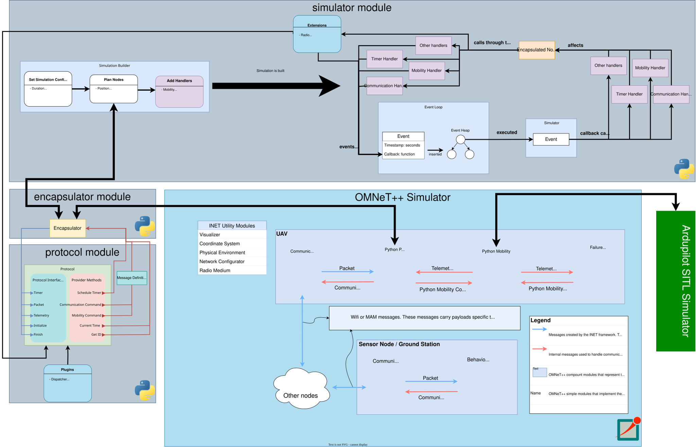

What's included?
When we talk about GrADyS-SIM NextGen as a simulation framework we are talking about a set of tools that enable you to create and execute network simulations. These components are distributed under different repositories, and have different purposes.
Seeing all these components may seem overwhelming at first. This section aims to give you a high level overview of what each component does and how they interact with each other, and where you can read more about them.

The gradysim python package
The gradysim python package contains all the python implementations in the
GrADyS-SIM NextGen framework. It is also responsible for hosting the
documentation you are reading. It is the main entry point for the framework
and the place where you can find the most information about it. Any component
that is hosted outside this repository will have a link to its documentation
in this repository.
The gradysim package is divided into three main subpackages: protocol,
simulator and encapsulator. We will talk about each of them next.
protocol
The protocol subpackage specifies the Protocol API and it's dependencies.
You will use this packet to build your own protocols that are
environment-agnostic. This means that you can use the same protocol
implementation in different environments without changing your code.
These execution environments are often called execution modes inside the
documentation.
Inside this package you will find everything you need to build your own protocol. This includes the IProtocol interface that you extend to create your own protocol, the IProvider interface that provides the means for your protocol to interact with it's environment and the CommunicationCommand and MobilityCommand commands that your protocol needs to talk to the mobility and communication modules.
Also included is a library of plugins intended to help developers build their protocols. These plugins enhance the experience of building protocols by providing common functionalities that are often needed in protocols. You can read more about them in the plugins documentation.
Info
View the creating a protocol and the
implementation of a simulation scenario guides for
concrete examples of using this package. For a more in-depth view read the
documentation for the protocol subpackage here.
simulator
This package contains the code responsible for executing protocols in prototype-mode. Implemented in it is a python event-based network simulator that is capable of executing protocols in a simulated environment. You can use this package to quickly prototype your protocols and test them in a simulated environment that is simpler than the one provided in the integrated mode.
Simulations are capable of simulating the movement of nodes in a 3D space and
the communication between nodes. The protocol interacts with the simulation
environment through glue-code provided in the encapsulator package.
The simulation also provides extensions that
enable you to modify and enhance the behaviour of the simulator. These
extensions include different radio models, simulated hardware or others. It's
important to note that unlike plugins, extensions work exclusively on the
python simulated environment and cannot be used in other execution modes.
Info
Both the creating a protocol and the
implementation of a simulation scenario guides use
the prototype-mode simulator to execute the protocols. You can read them to
understand how to use this package. For a more in-depth view read the
documentation for the simulator subpackage here.
encapsulator
The final subpackage in the gradysim package is the encapsulator. It is
responsible for providing the glue-code that enables the protocols defined using
the protocol package to interact with the simulation environment provided by
the execution mode the protocol is being run in. This environment can be the
prototype-mode simulator, the integrated-mode OMNeT++ or the experiment-mode.
The IEncapsulator interface defines the template that encapsulators must follow. Encapsulators connect protocols to their execution environment by injecting the environment-specific provider instance into it. This provider instance will be used by the protocol to interact with the environment.
Generally speaking, you shouldn't need to implement your own encapsulator. The framework provides encapsulators for the prototype-mode simulator and the integrated-mode's OMNeT++.
Info
Since as a normal user of the framework you shouldn't need to interact
directly with this module, no guides for using it are provided. If you
want an in depth view of how it works you can read the documentation for
the encapsulator subpackage here.
The OMNeT++ GrADyS-SIM Simulator
Before GrADyS-SIM NextGen was created, GrADyS-SIM already existed and was built using the OMNeT++ network simulator. In the context of OMNeT++ GrADyS-SIM is a library of modules that enable you to build simulations inside OMNeT++ that work in a specific way. More specifically, they enable users to build and simulate network simulations populated by mobile vehicles and stationary nodes that all communicate with eachother so implement some kind of distributed algorithm we call "protocol".
It was created to satisfy the needs of the GrADyS project that aimed to simulate scenarios where autonomous aerial vehicles would fly over stationary sensors to collect data and bring it to a stationary ground station. After realising how useful the architecture we built was, we decided to make it available to the public as a simulation framework which we called GrADyS-SIM.
GrADyS-SIM NextGen is a continuation of this project. The focus of the framework turned to the python-implemented protocols and the new python and old OMNeT++ simulators are now viewed as environments where the protocols can execute in.
The OMNeT++ framework is still available and is still being maintained. It can
still be used independently but it has been integrated into the GrADyS-SIM
NextGen framework to run as an execution-mode, integrated-mode. This means
that your protocols written in python using the protocol package can run
inside the OMNeT++ simulation which provides a more realistic network model.
Info
The OMNeT++ GrADyS-SIM Simulator is hosted in a separate repository. You can find it here. There you will find installation instructions and a guide on how to use it to run your protocols in the integrated-mode. For a more in depth look you can read this technical report describing the original simulation framework.
Integration with Ardupilot's SITL Simulator
OMNeT++ and it's component library INET provides a very competent network model, but it's model for mobility is very simplistic. Nodes move through very simple arithmetics based on their speed, position and time since last update. An urge for a more realistic simulation environment motivated the team to integrate the OMNeT++ simulator with Ardupilot's SITL simulator.
ArduPilot is an open source autopilot system supporting multi-copters, traditional helicopters, fixed wing aircraft, rovers and more. It's a very popular autopilot system used in many different applications. The SITL Simulator is a simulator that is part of ArdiPilot's ecosystem that allows you to simulate the behaviour of real vehicles running ArduPilot. The simulated vehicles communicate just like real ones through the MAVLink protocol. They also operate convincingly like their real counterparts, taking into account the physics of the vehicle and it's environment.
Through the MAVLink protocol this simulator was integrated into GrADyS-SIM's OMNeT++ simulator. Using this integration the framework provides a mobility model superior to any available in INET. This integration is available in the integrated-mode of the framework. That means that you can use it to run your protocols in a more realistic environment.